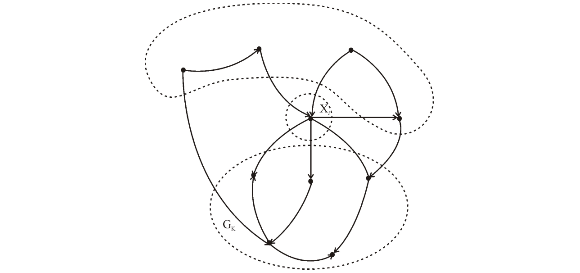
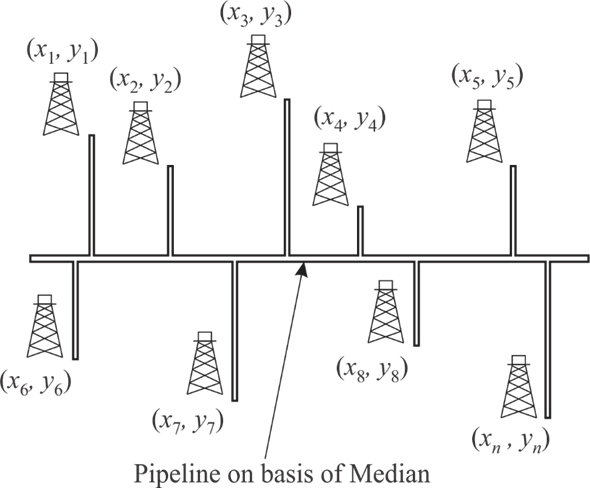

Consider the SELECT () algorithm provided in section 9.3. In SELECT () algorithm n elements of array are divided into groups, each having 5 elements.
Out of groups at most one group have n mod 5 elements.
Now, sort the elements in group and find the median of each group. Now determine the median among all medians that is x.
At least half of group contribute three elements which are greater than x, excluding one group which does not 5 elements and another group that contain x itself.
There are at-least elements which are greater than x and also there are elements which are smaller than x.
Elements are divided into group of 7 elements:
The least number of elements which are greater or less than median x are:
In worst case the step 5 of SELECT () algorithm recursively calls at most elements.
So, the recurrence becomes:
Suppose, where c is any large constant and bound it with non-recursive term an:
Add and subtract
The last steps get true only when, that is
...... (1)
Suppose therefore it will give. So selecting will satisfy the equation (1).
Hence, SELECT algorithm run in liner time when group size is 7.
When elements are divided into group of 3 elements:
The least number of elements which are greater or less than median x are:
In worst case the step 5 of SELECT () algorithm recursively calls at most elements.
Therefore, the recurrence becomes:
Suppose, where c is any large constant and bound it with non-recursive term an:
Since, is greater than 0, so it is not possible to drive.
Hence, SELECT algorithm cannot run in liner time when group size is 3.
Suppose n is number of elements in array. Divide the n elements into group, each having 5 elements. Out of groups at most one group have n mod 5 elements.
Now, sort the elements in group and find the median of each group. Now determine the median among all medians that is x.
At least half of group contribute three elements which are greater than x, excluding one group which does not 5 elements and another group that contain x itself.
There are at-least elements which are greater than x and also there are elements which are smaller than x.
Assume value of n is equal to 100; therefore the minimum numbers of elements greater than x are as follow:
Put value of n as 100.
Now, evaluate when value of n is 100 that is lesser than 140:
When numbers of elements in array are less than 140 then minimum number of elements greater and less than x are less than.
Put value of n as 140.
Now, evaluate to
analyze
to
analyze
When numbers of elements in array are less than 140 then minimum numbers of elements greater and less than x are greater than.
Hence, it is proved that when numbers of elements are greater than 140 then at-least elements are greater and less than x.


Consider a set S contains n distinct numbers. The following algorithm is used to determine k closet element to median of S whereas.
SELECT-CLOSET(S, k, n)
1. Declare j = 0 and array B[] to store closet k element
//check numbers of elements are less than closet elements
2. if
3. return S
//call function to determine median
4. m = SELECT (S, n)
//check value of k is even or odd
5. if
//Determine the bound around the median in which k element lies.
6.
7.
8. else
9.
10.
//determine the bound element
11. a =RAMDOMIZED-SELECT(S, 1, n , a1)
12. b =RAMDOMIZED-SELECT(S, 1, n , b1)
//use to determine the k elements in between the bound
13. for  to
n
to
n
//check ith element of S lies in between a and b
14. if and
15.
16. return B
Explanation:
• In above SELECT-CLOSET () algorithm, two others SELECT () and RAMDOMIZED-SELECT () procedure are called to determine the median and ith smallest element from set.
• The time complexity of both SELECT () and RAMDOMIZED-SELECT ()
are , apart from
that only one for loop is used which iterates from 1 to
n.
, apart from
that only one for loop is used which iterates from 1 to
n.
Therefore, the time complexity of SELECT-CLOSET () algorithm
is.
Consider the two arrays and, each having n sorted elements. Total number of elements in two arrays becomes 2n.
Assume startX, endX, startY and endY are variables used to store start and end index of two X and Y array. Initially the value of startX and startY is 1 whereas the value of endX and endY is n.
Now use following MEDIAN() algorithm to determine median among total 2n elements.
MEDIAN(X, Y, startX, endX, startY, endY)
1. if
2. return
3. midX=
4. midY=
5. if
6. return MEDIAN(X, Y, midX, endX, startY, midY)
7. else
8. return MEDIAN(X, Y, startX, midX+1, midY, endY)
After the each recursive call, the size of array has been reduced by half therefore the time complexity of above algorithm is.
The following figure Fig1 display the large pipeline running from east to west. There are n numbers of oil wells around the pipeline in north and south direction.

Fig 1: Large pipeline running from east to west.
Supposeare the coordinates of n oil wells. The optimal solution to determine the place of main pipeline is to determine the median from oil well coordinates.
The main pipeline is running from east to west and oil wells are on north and south direction, therefore only y coordinates is enough to determine the median.
When pipeline passes through median, then total length of spurs pipeline become minimum:
• Suppose main pipeline does not pass from median, it passes below or above the median then in that case, the total length of spurs pipeline get increases.
• When number of oil wells that is n is odd then number of oil wells above or below the median are where as one well is on median.
• Suppose main pipeline move k units above the median where. Therefore all oil well which are above median get k units closer to main pipeline where as all oil wells which are below the median get k units far from main pipeline.
• Now, there are oil wells below the main pipeline whereas there are oil wells are above the main pipeline. One oil well is one new main pipeline.
• The new total length of spurs pipeline becomes:
Where, S is the total length of spur pipeline when main pipeline passes through median and is the leg total length of spur pipeline when main pipeline passes above median.
Similarly, total length of spur pipeline increase when n is even and main pipeline does not pass through median.
Hence, it is proved that spur total pipeline length get minimum when main pipeline passes through median.
With the help of SELECT() algorithm, median can be find in the
 time that is in linear time.
time that is in linear time.
• In SELECT() Algorithm, divide the n elements (number of oil wells) into group, each having 5 elements. Out of groups at most one group have n mod 5 elements.
• Now, sort the elements in group and find the median of each group.
• At last determine the median among all medians that is x.